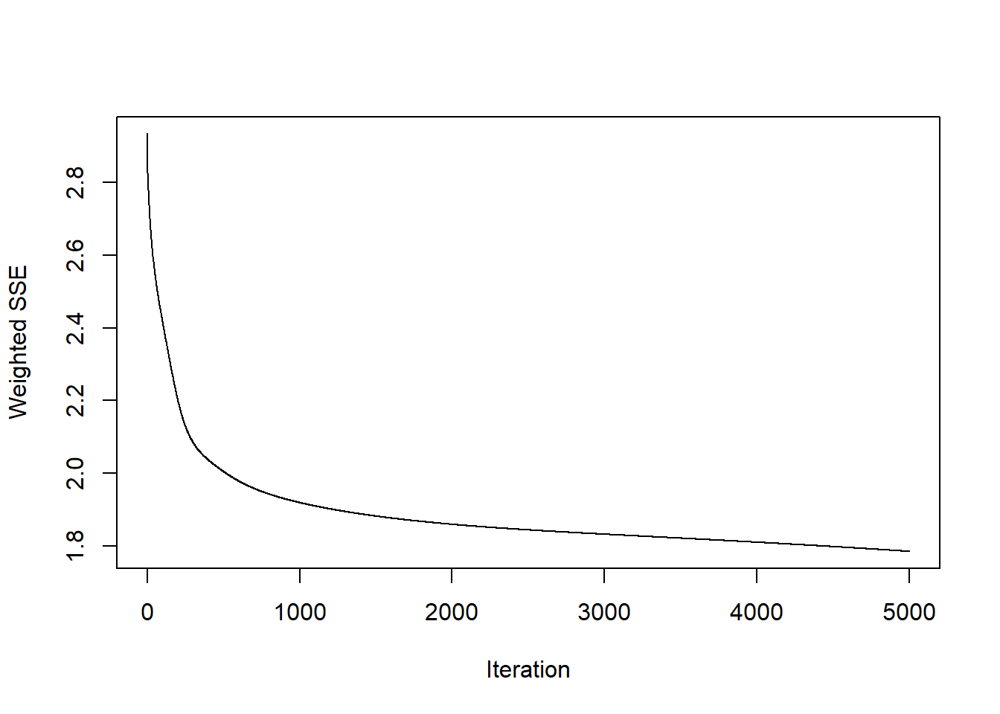
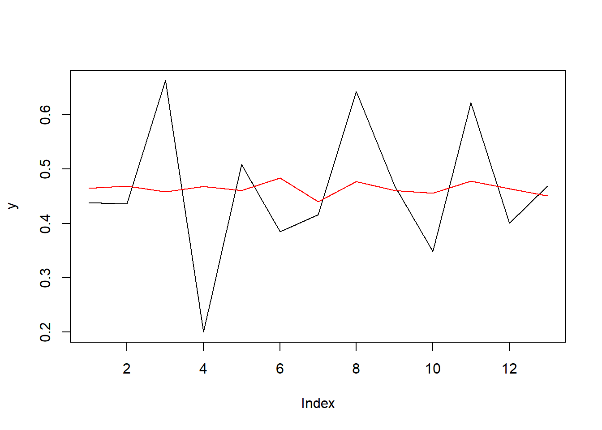

Chapter 7 Modelos de Redes Neuronales
Se presenta la aproximación al uso básico de las Redes Neuronales Recurrentes Elman y Jordan.
Para comenzar, se retomará la versión transformada de la serie que se está analizando en este informe, la cantidad de casos de dengue grave en Cali, tal como se presenta a continuación.

Sin embargo, se utilizará la versión normalizada de los datos, tal como se observa a continuación.
7.1 Elman
Entre los elementos clave en la fase de preparación, se define la cantidad de registros que serán parte del entrenamiento del modelo, considerando la disponibilidad de registros y los valores que quedarán comprometidos al crear variables a partir del análisis de rezagos.
Como se anticipaba anteriormente, se definen como variables de entrenamiento los valores rezadados de los últimos tres periodos.
Ahora, se definen los valores de entrada y salida de la red neuronal.
Luego, se ajusta la red Elman.
En este caso, después de hacer diferentes intentos, se eligió crear una red de dos capas, cada una de siete neuronas. La tasa de aprendiaje es 0.1, y el número máximo de iteraciones de 5000.

La gráfica anterior muestra que el error converge a cero medianamente rápidamente.
Ahora, se realiza una predicción y se compara con el conjunto de datos de prueba.
Como se puede observar, en general, el ajuste no es del todo bueno.
7.2 Jordan
Ahora, se recurre a una versión básica de las redes de Jordan.
Aprovechando los preparativos anteriores, se realiza el ajuste de inmediato. En este caso, se eligió tener siete capas ocultas, una taza de aprendizaje de 0.01 y un máximo de 5000 iteraciones.
A continuación se observa la predicción realizada y su comparación con el conjunto de datos de prueba.

Aquí tampoco se logró un buen ajuste.
7.3 Resumen y conclusión
Se realizaron múltiples iteraciones para tratar de mejorar los resultados, incluyendo la variación de los hiperparámetros y la asignación de un mayor número de variables rezagadas, sin embargo, en lugar de mejorar, los resultados eran todavía peores.
En suma, como se esperaba para esta primera exploración, ninguno de los dos modelos logró un desempeño ni medianamente satisfactorio, como lo pueden evidenciar el siguiente resumen de métricas calculados a partir de los conjuntos de prueba.
Modelo MAE RMSE R2
1 Elman 0.09 0.10 0.36
2 Jordan 0.09 0.11 0.32